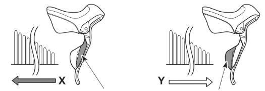
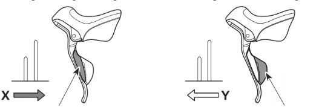

Contact the place of purchase or a bicycle dealer for information on installation and adjustment of the products which are not found in the user's manual. A dealer's manual for professional and experienced bicycle mechanics is available on our website.
Do not disassemble or alter this product.
For safety, be sure to read this user's manual thoroughly before use, and follow it for correct use.
For replacement information, contact the place of purchase or a bicycle dealer.
!!! WARNING !!!
When the shifting switch is operated, the motor which drives the front derailleur will operate to the shifting position without stopping, so be careful not to get your fingers caught.
It is important to sufficiently understand the operation of the bicycle brake system. Improper use of your bicycle's brake system may result in a loss of control or a fall, which could lead to severe injury. Because each bicycle may handle differently, be sure to learn the proper braking technique (including brake lever pressure and bicycle control characteristics) and operation of your bicycle. This can be done by consulting your professional bicycle dealer and the bicycle's owners manual, and by practicing your riding and braking technique.
If the front brake is applied too strongly, the wheel may lock and the bicycle may fall forward, and serious injury may result.
Always make sure that the front and rear brakes are working correctly before you ride the bicycle.
The required braking distance will be longer during wet weather. Reduce your speed and apply the brakes early and gently.
If the road surface is wet, the tires will skid more easily. If the tires skid, you may fall off the bicycle. To avoid this, reduce your speed and apply the brakes early and gently.
In the case of carbon levers, check before riding that there is no damage such as carbon separation or cracking. If damage is found, do not use it; contact the place of purchase or a bicycle dealer. Otherwise, the lever may break, and the braking operation may stop working.
After reading the user's manual carefully, keep it in a safe place for later reference.
Note
Be sure to rotate the crank when carrying out any operations which are related to gear shifting.
A software update with the E-TUBE PROJECT used after connecting to the wireless unit
(SM-EWW01/EW-WU101/EW-WU111) enables the remote switch to operate. For details,
consult the place of purchase.
The components are designed to be fully waterproof and withstand wet weather riding conditions; however, do not deliberately place them into water.
Do not clean the bicycle in a high-pressure car wash. If water gets into any of the components, operating problems or rusting may result.
Handle the products carefully, and avoid subjecting them to strong shock.
Be careful not to let water get into the E-TUBE port.
Do not use thinners or similar substances to clean the products. Such substances may damage the surfaces.
In the case of carbon levers, wash them with a soft cloth. Be sure to use a neutral detergent. Otherwise, the material may brake down and be damaged.
Avoid leaving the carbon levers in places where high temperatures are present. Also, keep them far away from fire.
Contact the place of purchase for updates of the product software. The most up-to- date information is available on the Shimano website.
Also read the manuals for the brake and other equipment to be connected.
Products are not guaranteed against natural wear and deterioration from normal use and aging.
For maximum performance we highly recommend Shimano lubricants and maintenance products.
This device complies with part 15 of the FCC Rules. Operation is subject to the
following two conditions:
(1) This device may not cause harmful interference, and (2) this device must accept any
interference received, including interference that may cause undesired operation.
Before riding the bicycle, check the following items. If any problems are found with the following items, contact the place of purchase or a bicycle dealer.
- Do the front and rear brakes work correctly?
- Does the brake lever have sufficient freeplay?
- Does the brake cable have any rust, fraying, or cracks?
- Have the brake shoes worn down to the grooves?
- Does gear shifting occur when the shifting switches are operated?
- Are the levers securely installed to the handlebar?
- Do any abnormal noises occur during operation?
* 1 Depending on the specifications, some models do not have the function. Pull back the bracket cover of each lever and check whether it is fitted with a remote switch.
* 2 The number of ports in the E-TUBE port section varies by model.
Gear shifting operation
Be sure to rotate the crank when carrying out any switch operations which are related to gear shifting.
Remote switch (initial setting)
The remote switch transmits signals to compatible components via the wireless unit (SM-EWW01/
EW-WU101/EW-WU111). Operation and functions differ depending on the compatible
component. Refer to the instruction manual for the compatible component in question.
Rear shifting switch operation (initial setting)
Front shifting switch operation (initial setting)
If the chain falls off on the inside, keep pressing shifting switch (X) for 1 second or more to move the front derailleur to the outermost position, and then keep it pressed for 10 seconds in order to reset the chain.
Actual behavior may differ depending on the connected components and software version.
The following changes can be made to the settings of each switch. For further details and setting adjustments, consult the place of purchase.
- Reverse the shifting up and down assignments of the shifting switches (X) and (Y)
- Reverse the rear and front shifting assignments of the shifting switches (right/left)
- Configure Multi shift mode settings
- Set the remote switches to function as shifting switches
Braking operation
This product is equipped with a reach adjustment function.
For further details and adjustments, consult the place of purchase.
Shimano North America Bicycle, Inc.
One Holland, Irvine, California 92618, U.S.A. Phone: +1-949-951-5003
Shimano Europe B.V.
High Tech Campus 92, 5656 AG Eindhoven, The Netherlands Phone: +31-402-612222
Shimano Inc.
3-77 Oimatsu-cho, Sakai-ku, Sakai-shi, Osaka 590-8577, Japan
Please note: specifications are subject to change for improvement without notice. (English)